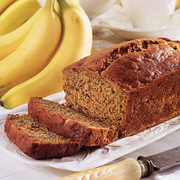

BANANA BREAD

The best recipes come tried and true from friends who begged them from other friends and so on and so on. That’s the wonderful thing about sharing recipes – the more good recipes we share, the better we all get to eat! This banana bread comes from my friend Heidi who years ago begged this recipe from a ski friend’s mother – Mrs. Hockmeyer (parents of friends are always Mr. and Mrs. no matter how old we get). Mrs. Hockmeyer passed away years ago, but her simple but perfect banana bread lives on for all of us to enjoy.
Ingredients
- 3 or 4 ripe bananas
- 1\3 cup melted butter
- 1 cup sugar
- 1 egg
- 1 teaspoon vanilla
- 2 cups all purpose flour
- 1 tsp baking soda
Method
No need for a mixer for this recipe. Preheat the oven to 350°F (175°C). With a wooden spoon, mix butter into the mashed bananas in a large mixing bowl. Mix in the sugar, egg, and vanilla. Sprinkle the baking soda and salt over the mixture and mix in. Add the flour last, mix. Pour mixture into a buttered 4x8 inch loaf pan. Bake for 1 hour. Cool on a rack. Remove from pan and slice to serve.
Source: http://www.simplyrecipes.com/recipes/banana_bread/